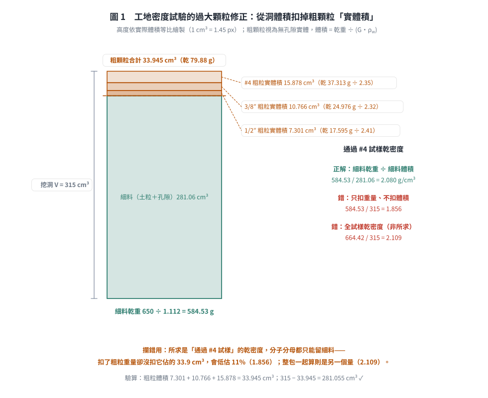

📄 題目正本：考卷原文・附圖・判讀清單（已確認）
SM-2005-2 題目正本
本檔只記錄考卷上寫了什麼、圖上畫了什麼，不含任何解法。解析見同資料夾
SM-2005-2.md。
判讀清單已確認（凍結）；本檔原則上不再修改（改動須回考卷原圖並記 log）。
| 項目 | 內容 |
|---|---|
| 考卷 | raw/exams/SM-2005_土壤力學與基礎設計.pdf 第 1 頁（正面），第二題 |
| 考年 | 民國 94 年（2005） |
| 配分 | 25 分 |
| 附圖 | 無（右側為資料表，已照錄於 §2） |
| 判讀狀態 | 已確認（2026-11-15 關卡一：使用者授權依建議判讀確認；表中「比重」依建議判讀為粗顆粒的比重、以其乾重除以比重得顆粒實體積（#4）；轉錄 2026-11-15；PyMuPDF 110 dpi 全頁目視，題文與附表 200–250 dpi 局部放大，PDF 文字層核對逐字原文；盲讀後才比對既有解析） |
1. 考卷原文（逐字）
二、野外工地密度試驗，挖除試樣之總體積為 315 cm³，其餘資料如右表所列，試推求通過#4 篩之試樣乾密度為何？（25 分）
2. 考卷給的公式、附表與參數
考卷右表（照錄）：
| 篩號 | 個別留篩濕重(g) | 含水量 % | 比重 |
|---|---|---|---|
| 1/2″ | 18 | 2.3 | 2.41 |
| 3/8″ | 26 | 4.1 | 2.32 |
| #4 | 40 | 7.2 | 2.35 |
| 小於#4 | 650 | 11.2 | - |
- 挖除試樣總體積 315 cm³。
- 沒有給：$\rho_w$、小於 #4 部分的比重（表中為「-」）、表中「比重」是視比重或容積比重（未說明）。
- 考卷沒有附公式。
- 卷首注意事項：㈠不必抄題，作答時請將試題題號及答案依照順序寫在試卷上，於本試題紙上作答者，不予計分。㈡可以使用電子計算器，但需詳列解答過程。
3. 附圖
考卷本題無附圖。右側資料表為文字表格（PDF 文字層可抽），已照錄於 §2。
4. 判讀清單
| # | 項目 | 判讀 | 圖上／題文依據 | 把握 |
|---|---|---|---|---|
| 1 | 表中「比重」的用途 | 粗顆粒（1/2″、3/8″、#4 篩留篩部分）的比重，用來由乾重求各粗顆粒所占體積；判讀為以 $W_s/(G\rho_w)$ 計顆粒體積；粗顆粒所含少量水視為附著／吸附於顆粒，不另占體積 | 表頭「比重」、小於 #4 為「-」 | 不確定（影響答案，依建議定案；使用者授權） |
| 2 | 濕重性質 | 「個別留篩濕重」為各篩個別留篩（非累積）的濕重 | 表頭「個別留篩濕重(g)」 | 確定 |
| 3 | 含水量 | 每一列的含水量各自適用於該列濕重 | 表列 | 確定 |
| 4 | 「#4」列歸屬 | 「#4」列為留在 #4 篩上的顆粒（大於 #4），屬須扣除的粗顆粒；「小於#4」列即所求通過 #4 篩之試樣 | 表列與題文「通過#4 篩之試樣」 | 確定 |
| 5 | 體積基準 | 315 cm³ 為全部試樣（含粗顆粒）挖除的總體積 | 題文 | 確定 |
| 6 | 所求 | 通過 #4 篩試樣的乾密度（單位未指定，密度單位） | 題文 | 確定 |
| 7 | 考卷沒有給 | $\rho_w$、細料比重、比重種類 | 全題 | 確定 |
轉錄：2026-11-15（SM-U1-1 題目正本推廣・批 1）
確認：2026-11-15 使用者授權依建議判讀確認（SM-U1-1 題目正本推廣・批 1，關卡一；使用者指示「要我確認的請依你建議」）
考題編號：SM-2005-2
主分類： SM-U1-1 土壤基本性質
副分類： SM-U1-3 土壤夯實及壓密
分析法： 混合
標籤： 三相關係 工地密度試驗 過大顆粒修正 乾密度 比重 含水量
1. 題目（考卷原文見題目正本）
考卷原文、公式／附表、附圖與判讀清單（已確認）見
SM-2005-2-problem.md。本節只列解題時最容易讀錯的地方與本解使用的記號；題意以題目正本為準。
常見誤讀
| 項目 | 正確判讀 | 常見誤讀 |
|---|---|---|
| 表中「比重」 | 粗顆粒比重，粗顆粒體積 $=W_s/(G\rho_w)$；粗顆粒所含水不另占體積（題目正本 #1，已確認） | 用濕重除以比重，或把比重平均後一次計算 |
| 「#4」列 | 留在 #4 篩上的顆粒，屬須扣除的粗顆粒；所求是「小於#4」列（#4） | 把 #4 列當成通過 #4 的細料 |
| 各列含水量 | 每列各用自己的含水量求乾重（#3） | 用總濕重配單一含水量 |
本解記號： $V_{total}$ 挖除總體積；$W_{s,c}$、$V_c$ 粗顆粒乾重與體積；$W_{s,f}$、$V_f$ 通過 #4 篩細料乾重與體積；$\rho_{d,f}$ 細料乾密度。
2. 考題核心精神與出題者意圖 (Core Concepts & Examiner's Intent)
本題測驗考生地工實務中「工地密度試驗（Field Density Test）之過大顆粒（Oversized Particles）修正」概念。
在進行夯實控制時，室內標準夯實試驗通常僅針對通過 #4 篩（或 3/4" 篩）之細粒料進行。當工地現場土壤含有大於 #4 篩之粗顆粒（礫石）時，必須將現場測得的總體積與總重量，扣除粗顆粒所佔的體積與重量，求出「僅含通過 #4 篩土壤」的現場乾密度，才能與室內夯實試驗求得的最大乾密度（$\gamma_{d,\max}$）進行相對夯實度（RC）之比較。
3. 解題戰略地圖與陷阱分析 (Strategic Roadmap & Trap Analysis)
- 步驟 1： 將各篩號留滯之「粗顆粒」濕重，利用各自的含水量換算為「乾重」。
- 步驟 2： 利用粗顆粒乾重與各自的比重，求出各粗顆粒所佔的「實體積」（假設粗顆粒內部無孔隙）。
- 步驟 3： 從挖除試樣之總體積中，扣除粗顆粒之總體積，得到「小於 #4 篩土壤所佔之體積」。
- 步驟 4： 將小於 #4 篩之土壤濕重換算為乾重，除以其所佔體積，即為所求之試樣乾密度。
陷阱分析：
- 直接相加求平均： 粗顆粒的含水量與比重不同，必須分別計算出各自的乾重與體積後再加總，不能直接平均比重或含水量。
- 粗顆粒體積計算： 粗顆粒（礫石）的體積是由其乾重除以（比重 $\times$ 水密度）求得，而非使用濕重。
3.5 變數層次分析 (Variable Hierarchy Analysis)
最終目標
求出挖除試樣中，通過 #4 篩（細粒料）部分之乾密度 $\rho_{d,f}$。
本題關鍵公式（依計算順序）
- 粗顆粒乾重：$W_{s,c} = \frac{W_{w,c}}{1 + w_c}$
- 粗顆粒體積：$V_c = \frac{\boxed{W_{s,c}}}{G_s \cdot \gamma_w}$
- 細粒料體積：$V_f = V_{total} - \sum \boxed{V_c}$
- 細粒料乾重：$W_{s,f} = \frac{W_{w,f}}{1 + w_f}$
- 細粒料乾密度：$\rho_{d,f} = \frac{\boxed{W_{s,f}}}{\boxed{V_f}}$
L1：題目直接給定
| 符號 | 數值 | 說明 |
|---|---|---|
| $V_{total}$ | $315 \text{ cm}^3$ | 挖除試樣之總體積 |
| $W_{w, 1/2}$ | $18 \text{ g}$ | 1/2" 篩留滯濕重 |
| $w_{1/2}$ | $2.3\%$ | 1/2" 篩留滯含水量 |
| $G_{s, 1/2}$ | $2.41$ | 1/2" 篩留滯比重 |
| $W_{w, 3/8}$ | $26 \text{ g}$ | 3/8" 篩留滯濕重 |
| $w_{3/8}$ | $4.1\%$ | 3/8" 篩留滯含水量 |
| $G_{s, 3/8}$ | $2.32$ | 3/8" 篩留滯比重 |
| $W_{w, \#4}$ | $40 \text{ g}$ | #4 篩留滯濕重 |
| $w_{\#4}$ | $7.2\%$ | #4 篩留滯含水量 |
| $G_{s, \#4}$ | $2.35$ | #4 篩留滯比重 |
| $W_{w, f}$ | $650 \text{ g}$ | 小於 #4 篩濕重 |
| $w_{f}$ | $11.2\%$ | 小於 #4 篩含水量 |
| $\gamma_w$ | $1 \text{ g/cm}^3$ | 水的單位重 |
L2：需知識點推導
粗顆粒乾重與體積
| 符號 | 公式／來源 | 卡關? |
| :--- | :--- | :--- |
| $W_{s, 1/2}$ | $W_{w, 1/2} / (1 + w_{1/2})$ | |
| $V_{1/2}$ | $W_{s, 1/2} / (G_{s, 1/2} \cdot \gamma_w)$ | |
| $W_{s, 3/8}$ | $W_{w, 3/8} / (1 + w_{3/8})$ | |
| $V_{3/8}$ | $W_{s, 3/8} / (G_{s, 3/8} \cdot \gamma_w)$ | |
| $W_{s, \#4}$ | $W_{w, \#4} / (1 + w_{\#4})$ | |
| $V_{\#4}$ | $W_{s, \#4} / (G_{s, \#4} \cdot \gamma_w)$ | |
細粒料體積與乾密度
| 符號 | 公式／來源 | 卡關? |
| :--- | :--- | :--- |
| $V_f$ | $V_{total} - (V_{1/2} + V_{3/8} + V_{\#4})$ | |
| $W_{s,f}$ | $W_{w,f} / (1 + w_f)$ | |
| $\rho_{d,f}$ | $W_{s,f} / V_f$ | |
L3：深層知識（不懂就卡住）
| 知識點 | 說明 | 卡關? |
|---|---|---|
| 過大顆粒體積計算 | 粗顆粒本身無孔隙或視為實體，其體積為固體體積 $V_s = W_s / (G_s \gamma_w)$ | |
| 現場乾密度修正 | 必須從總體積中扣除粗顆粒之絕對體積，剩餘體積即為細粒料與其孔隙所佔之體積 |
4. 步驟化詳細計算過程 (Step-by-Step Detailed Calculation)
Step 1：計算大於 #4 篩各粗顆粒之乾重 ($W_s$) 與體積 ($V_c$)
粗顆粒包含留滯於 1/2"、3/8" 及 #4 篩之土壤。
固體乾重 $W_s = \frac{W_w}{1 + w}$
固體體積 $V_c = \frac{W_s}{G_s \cdot \gamma_w}$，其中 $\gamma_w = 1 \text{ g/cm}^3$。
-
1/2" 篩：
$W_{s, 1/2} = \frac{18}{1 + 0.023} = \frac{18}{1.023} = 17.595 \text{ g}$
$V_{1/2} = \frac{17.595}{2.41 \times 1} = 7.301 \text{ cm}^3$ -
3/8" 篩：
$W_{s, 3/8} = \frac{26}{1 + 0.041} = \frac{26}{1.041} = 24.976 \text{ g}$
$V_{3/8} = \frac{24.976}{2.32 \times 1} = 10.766 \text{ cm}^3$ -
#4 篩：
$W_{s, \#4} = \frac{40}{1 + 0.072} = \frac{40}{1.072} = 37.313 \text{ g}$
$V_{\#4} = \frac{37.313}{2.35 \times 1} = 15.878 \text{ cm}^3$
大於 #4 篩之粗顆粒總體積：
$$V_c = V_{1/2} + V_{3/8} + V_{\#4} = 7.301 + 10.766 + 15.878 = 33.945 \text{ cm}^3$$
Step 2：計算小於 #4 篩細粒料之體積 ($V_f$)
細粒料之體積為挖除試樣總體積扣除粗顆粒之總體積：
$$V_f = V_{total} - V_c = 315 - 33.945 = 281.055 \text{ cm}^3$$
Step 3：計算小於 #4 篩細粒料之乾重 ($W_{s,f}$)
已知小於 #4 篩之濕重 $W_{w,f} = 650 \text{ g}$，含水量 $w_f = 11.2\%$：
$$W_{s,f} = \frac{W_{w,f}}{1 + w_f} = \frac{650}{1 + 0.112} = \frac{650}{1.112} = 584.532 \text{ g}$$
Step 4：推求通過 #4 篩之試樣乾密度 ($\rho_{d,f}$)
$$\rho_{d,f} = \frac{W_{s,f}}{V_f} = \frac{584.532}{281.055} = 2.0798 \text{ g/cm}^3 \approx 2.08 \text{ g/cm}^3$$
$$\boxed{\text{通過 \#4 篩之試樣乾密度為 } 2.08 \text{ g/cm}^3}$$

圖 1 過大顆粒修正：分子分母都只留細料。它攔的是「扣了粗粒重量、卻沒扣粗粒佔的 33.9 cm³」——那樣會得 1.856 g/cm³（低估約 11%）；不扣粗粒則是全試樣乾密度 2.109，不是本題所求。
5. 關鍵爭議點與進階探討 (Critical Issues & Advanced Discussion)
- 實務應用： 在土石方回填工程中，如果現場土壤含有較大比例的礫石（大於 20~30%），實驗室的標準夯實試驗必須將過大顆粒剔除，否則無法放入夯實模具中。為了一致性比較，現場測得的工地密度也必須透過上述計算剔除粗顆粒的影響，這稱為「Rock Correction」。
- 比重差異： 題目中不同粒徑的粗顆粒具有不同的比重，這在實際工程中很常見，可能是因為不同粒徑碎石來自不同岩性的母岩。若題目僅提供單一粗顆粒平均比重，則可將粗顆粒乾重加總後一次除以該比重求體積。
- 精度問題： 小數點取位會些微影響最終答案，建議中間步驟至少保留 3 位小數，最後結果再依常規取 2 位小數，以減少累積誤差。
修正日期：2026-11-15（§1 改為指向題目正本 SM-2005-2-problem.md；§4 補解題圖解 figs/SM-2005-2-fig-1-oversize-correction.svg；非勘誤）